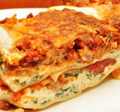

Lasagne

Lasagne
Lasagne is a classic Italian al forno dish that generally consists of alternating layers of pasta sheets and various fillings, including - though not exclusively - ragù, besciamella and cheese, such as mozzarella, ricotta or Parmesan.
Typically, this assembled dish is then baked in an oven until piping hot and all the cheese has melted.
Ingredients
- 1 tbsp olive oil
- onion, diced
- 1 carrot, diced
- 1 celery stalk, diced
- 2 garlic cloves, finely sliced
- 250g beef mince
- 250g pork mince
- 1 tbsp tomato purée
- 400g tin chopped tomatoes
- 200ml beef stock
- 200ml red wine
- 1 tsp Worcestershire sauce
- 9-12 lasagne sheets (depending on the size of your baking dish)
- 50g Parmesan, grated
- 150g pack mozzarella, shredded
- 50g butter
- 50g plain flour
- 550ml semi-skimmed milk
How to......
- In a large pan, heat the olive oil over a low heat. Fry the onion, carrot, celery and garlic for 5 mins,
or until softened. Add the mince and fry on a medium heat until golden. Turn up the heat, pour in the
wine and bubble until reduced. Stir in the tomato purée, chopped tomatoes and stock. Add in the Worcestershire
sauce and simmer for 15 mins, or until the liquid has reduced. Season.
- Meanwhile, make the white sauce. Melt the butter in a small saucepan over a low heat and add the flour.
Whisk until combined and cook on low for 1-2 mins. Remove from the heat and gradually whisk in the milk
until you have a loose sauce. Season. Return to a gentle heat and whisk constantly until the sauce thickens.
- Preheat the oven to gas 6, 200°C, fan 180°C. Layer up the lasagne in a baking dish, starting with a
third each of the ragu, then the pasta, then the white sauce. Repeat twice. Top with the Parmesan and
mozzarella then bake in the oven for 40-45 mins, until piping hot and crisp and bubbling on top. Serve immediately.